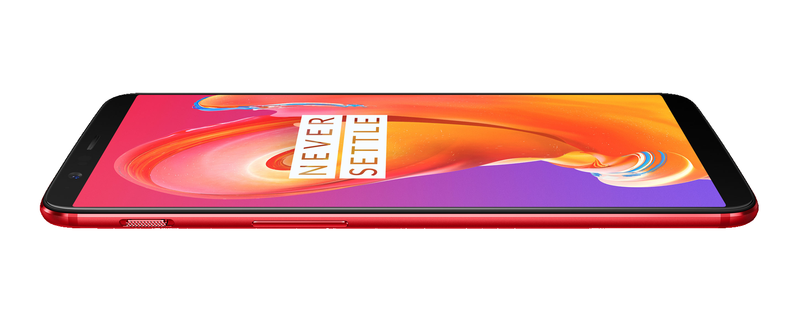

OnePlus 5T
One Plus 5T Lava Red Limited Edition
Le OnePlus 5T Lava Red rend hommage à notre couleur emblématique. Nous avons testé des centaines de nuances avant d'obtenir la magnifique Lava Red, une teinte unique qui sublime les lignes de notre modèle phare. Superbe sous tous les angles, la fine texture mate de Lava Red met en valeur la façade 100 % noire, pour une expérience visuelle immersive.
Design
Lava Red. Powerfully Radiant.
Disponible pour une période limitée en Lava Red. Notre écran 18:9 Full Optic AMOLED s'accorde à merveille avec le boîtier 100 % aluminium ultra-résistant, pour une expérience immersive unique signée OnePlus.
OxygenOS
Un logiciel si fluide que vous ne pourrez qu'apprécier la différence.
Le meilleur d'Android, amélioré. Grâce aux contributions de nos utilisateurs, OxygenOS vous offre une nouvelle expérience utilisateur epurée.
